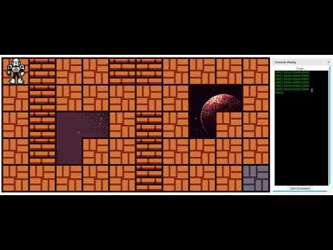
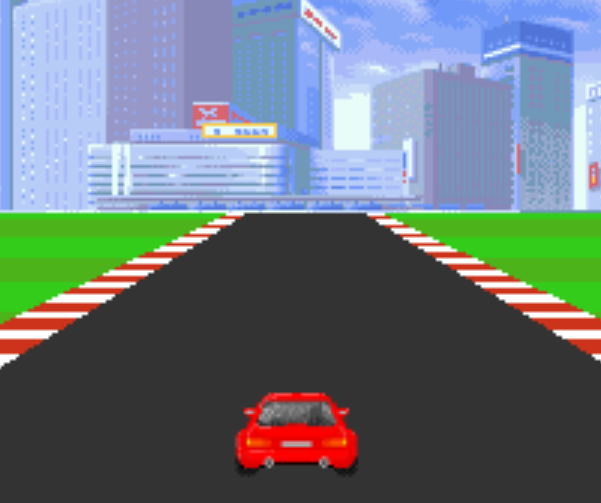
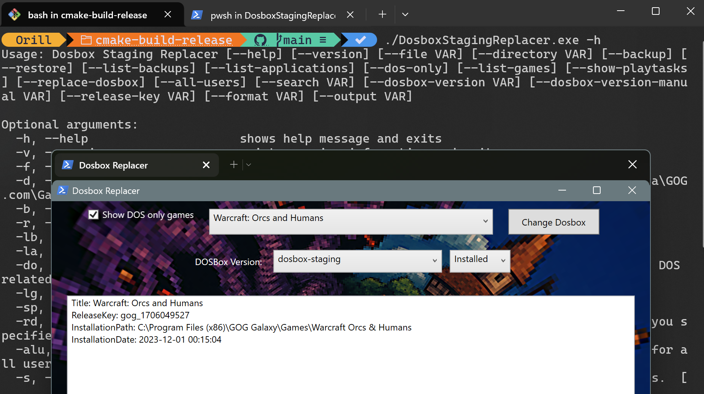

Projects
Here is the list of projects that I started and I had worked on. Some of it are discontinued but I still planned to continue it on the future. Here's a quick table of the projects currently listed on this site. Just click on the name to automatically be redirected to the section of this page you want to go to.
| Name | Type |
|---|---|
| Dragon Slayer | Game |
| Robo-JS | Game |
| s2sc.js | Tool |
| Zero Engine | Engine |
| [Proof of Concept] HTML5 2D Canvas Racing Game | Engine |
| GOG Galaxy Replacer | Tool |
| Game Guides Hub | Website |
Dragon Slayer (Text Based Game)

A solo-project of mine that I've developed as my final project on my CS120 (Introduction to Programming) class that aims to recreate the old rpg feel that games like Ultima had provide.
Status: Dropped
Robo.js (Github Link)
This game is made as a direct inspiration from an activity from my master's class in theory of programming languages. In the activity, we where tasked to create a script base on the specified op-codes of the robot.
The idea is to game-ify this activity by adding levels and extra functionalities that the original script did not have.
Status: Hiatus
s2sc.js (Github Link)

A javascript code convertion framework that aims to connect other programming languages to web browsers by interpreting codes from a programming language then converting it to another programming language.
Status: Hiatus
Zero Engine

A 2d game engine that aims to make developing a 2d game easier by doing templates and drag and drop functionality
Status: Hiatus (Planning to do an HTML5 Rewrite)
[Proof of Concept] HTML 2D Canvas racing game (Github Link) (Demo page)
A racing game created using raw 2d canvas without utilizing any libraries or browser plugins. The goal of the project is to determine the feasibility of the 2d canvas that HTML5 provides. The result was that although it is possible to create a game out of it, it is too slow enough to be considered a viable at this point in time even though most browsers do provide some level of acceleration on 2d canvas.
If you want to see the magic happen in action, since I happen to record myself coding this project for me to share on Facebook. You can view the recorded session here. It is an hour and a half long video but you are free to download the video and play it on fastforward on your favorite media player.
Status: Completed
GOG Galaxy Replacer (CLI) (GUI)
A utility designed to scan and replace DOSBox installations from GOG Galaxy with DOSBox Staging while preserving game-specific configurations. This tool was created due to limitations found in the default DOSBox shipped with older GOG titles, especially in input, scaling, and quality-of-life features.
The CLI version is written in C++ and provides automated detection and replacement logic, while the GUI version (written in PowerShell and uses the CLI as backend) offers a user-friendly interface for non-technical users to review and execute the replacement process.
Status: Completed
Game Guides Hub (Open)

A hub for written game guides with an AI assistance feature on select articles to help you quickly find information, plan parties, and get context-aware tips while playing.
Status: Active